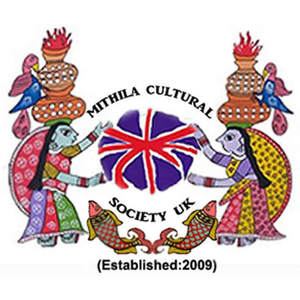

Trade Mark Journal No.2025/010 7 March 2025
UK00004144357 6 January 2025 (41)

- Class 41
- Cultural activities; Cultural services; Organizing cultural and arts events; Organisation of cultural events; Arranging of cultural events; Sporting and cultural activities; Cultural and sporting activities; Entertainment, sporting and cultural activities; Organisation of entertainment and cultural events; Festivals (Organisation of -) for cultural purposes; Providing cultural activities; Conducting of cultural events; Organisation of exhibitions for cultural and educational purposes; Organisation of exhibitions for cultural or educational purposes; Organization of exhibitions for cultural or educational purposes; Exhibitions (Organization of -) for cultural or educational purposes; Organization of exhibitions for cultural and educational purposes; Workshops for cultural purposes; Organizing community sporting and cultural events; Organization of cultural shows; Organising community cultural events; Arranging of festivals for cultural purposes; Arranging of exhibitions for cultural or educational purposes; Organisation of events for cultural, entertainment and sporting purposes; Organization of events for cultural purposes; Organisation of animal exhibitions for cultural or educational purposes; Conducting of cultural activities; Organising events for cultural purposes; Fetes (Organisation of -) for cultural purposes; Arranging of exhibitions for cultural purposes; Exhibitions (Arranging -) for cultural purposes; Arranging of conventions for cultural purposes; Organization of shows for cultural purposes; Administration [organisation] of cultural activities; Exhibitions (Conducting -) for cultural purposes; Ticket reservation for cultural events; Entertainment in the nature of ethnic festival; Provision of visitor attractions for cultural purposes; Organisation and holding of fairs for cultural or educational purposes; Organisation of congresses and conferences for cultural and educational purposes; Arranging of demonstrations for cultural purposes; Information relating to cultural activities; Arranging of competitions for cultural purposes; Arranging of displays for cultural purposes; Organisation of cultural activities for summer camps; Cultural, educational or entertainment services provided by art galleries; Arranging of presentations for cultural purposes; Religious educational services; Conducting guided tours of cultural sites for educational purposes; Arranging of seminars relating to cultural activities; Arranging of conferences relating to cultural activities; Providing will-call ticket services for entertainment, sporting and cultural events; Educational services for the dramatic arts; Religious education; Education (Religious -); Arranging and conducting of cultural activities; Providing information about cultural activities; Entertainment services in the nature of organizing social entertainment events; Educational services relating to religious development; Providing user rankings for entertainment or cultural purposes; Artistic management of entertainment venues; Artistic management of musical shows; Providing user reviews for entertainment or cultural purposes; Providing user ratings for entertainment or cultural purposes; Entertainment services in the nature of arranging social entertainment events; Artistic management of music venues; Ticket reservation and booking services for cultural events; Linguistic classes; Organisation of musical entertainment; Educational services relating to spiritual development; Musical entertainment; Festivals (Organisation of -) for educational purposes; Entertainment services in the nature of sporting events; Organisation of musical events; Artistic management of theatres; Arranging of visual and musical entertainment; Educational services in the nature of beauty schools; Organisation of educational events; Educational services relating to Japanese cuisine; Artistic management of theatre shows; Musical entertainment services; Technological education services; Social club services for entertainment purposes; Musical education services; Linguistic education and training services; Musical group entertainment services; Rental services relating to equipment and facilities for education, entertainment, sports and culture; Festivals (Organisation of -) for recreational purposes; Lingual education; Interviewing of contemporary figures for educational purposes; Entertainment in the nature of ongoing television programs in the field of variety; Sporting and recreational activities; Educational services relating to physical fitness; Organisation of artistic competitions; Educational services relating to the teaching of foreign languages; Educational services relating to the conservation of nature.
Mithila Cultural Society UK (MCSUK)